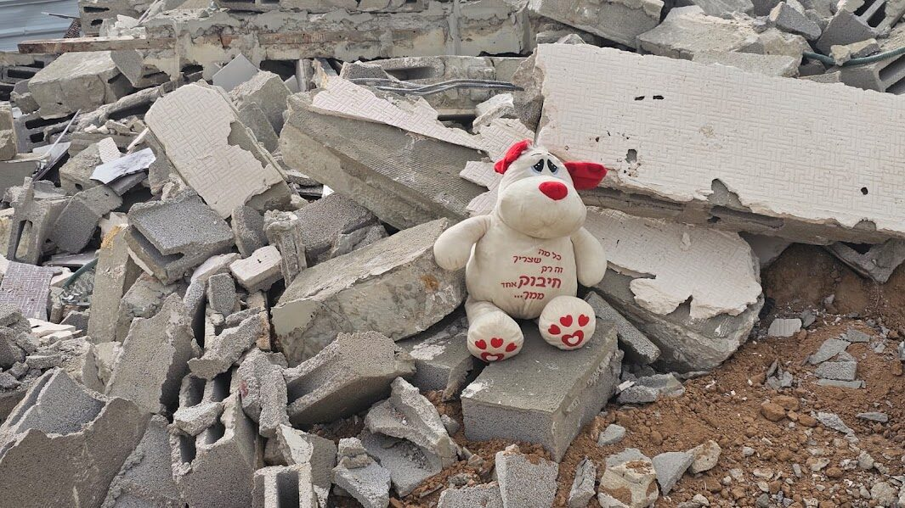

In brief
Some 150,000 citizens live in villages the state does not recognize. They are not connected to infrastructure, and no one can build a home there legally.
A 56-fold land gap. A Jewish rural resident in the northern Negev: 28 dunams per person. A Bedouin rural resident: half a dunam. (1 dunam = 1,000 m²)
Recognize the villages where they stand, on the moshav model: 2 dunams for housing and 3 for a livelihood per family, within expanded regional councils.
Thousands of small businesses, women and young people at work, a shift from welfare to taxes. A one-time investment instead of endless spending.
One tap, far from the homes
In Nahal Hava, a village of about 200 people next to Route 40, there is one main water tap, far from the homes. The water pipes run exposed. Electricity comes from solar panels; there is no sewage system and no street lighting. The road in is a dirt track that wrecks cars.
This is what dozens of villages in the Negev look like. The state does not recognize them, so it neither plans them nor connects them to infrastructure. Without a plan there are no building permits, and every house built there is considered illegal. Every such house can be demolished.
The state knows this too. In the draft Eastern Negev Regional Plan, the planners write that the gaps in electricity, water and sewage "stem from gaps in the regularization of the settlements."
Even most of the villages that were recognized were never truly regularized. On paper they have a name; on the ground they look exactly like their unrecognized neighbors.


The state demolishes twenty times faster than it regularizes

at the current pace
For more than fifty years the state has tried to evacuate the villages and concentrate their residents in townships. Meanwhile, the villages’ population has grown sixfold.
At the regularization pace of recent years, moving every village family would take about 900 years. And move them where? Thousands of families in the townships are waiting for housing, and about 93% of young Bedouin up to age 30 live with their parents.
28 dunams per person versus half a dunam
The five Jewish regional councils in the northern Negev house about 70,000 residents on 1.9 million dunams. The two Bedouin regional councils must serve about 150,000 rural residents, and they have 71,000 dunams.

Even after the plan, the gap will still be sevenfold. This is not a takeover of the Negev. It is a narrowing of a gap.
Had the Bedouin villagers been Jewish, the state would long ago have made them moshav farmers.

Click to enlarge

Not nomads. Farmers
This is the Beersheba Valley in 1945, the area between today’s Routes 25 and 31. The fields are divided into plots, with boundaries and dirt roads, and almost no land in the photo lies uncultivated. Today, in the same area, the fields are still farmed, with homes standing among them.
In the British census of 1931, only about 12% of the Negev Bedouin were classified as living from herding alone. All the rest farmed the land. By the mid-1930s, more than 2 million dunams were cultivated in the Beersheba district.
The Bedouin moshav doesn’t need to be invented. It was already here.
A moshav, not a housing block
Most village residents do not want to move to an apartment in a township. They want what the moshavim got: a family plot where the extended family lives together, with room for herds, farming and business. The plan rests on three pillars.
Stop the demolitions
From the government’s first day. Alongside this, clear rules are set for the interim period: where building is allowed, and how to connect water, electricity and kindergartens without waiting for planning to end.
Councils with land
The Bedouin regional councils grow from 71,000 dunams to about 600,000, covering 39 of the 46 villages. In the open areas: agriculture, solar energy and employment zones that bring in municipal taxes.
A farm for every family
30,000 auxiliary farms of 5 dunams each, where the families already live. Without waiting for a ruling on ownership claims, and without giving them up.
The land is already marked
The draft Eastern Negev Regional Plan, prepared by the Planning Administration, designates about 278,000 dunams for agriculture. According to the same plan, 90% of today’s farming in the area is Bedouin. About half of that land lies around the Bedouin towns and villages.
The land exists. What’s missing is the decision to recognize the villages that farm it.
One auxiliary farm, 5 dunams
This is how the state built the moshavim, and it worked. More than 90% of businesses in Israel are small and micro businesses. When land becomes a means of production, thousands of families can start a business and pay taxes.
And three dunams is modest. According to the state’s own plan, a family in the Tamar Regional Council makes a living from a 65-dunam farm.
Nahal Hava: the residents have already drawn their village
Nahal Hava (al-Afdai) sits beside Route 40, between Mitzpe Ramon and Sde Boker. It is home to 196 people: 12 extended families of the Sarahin tribe.
Between December 2024 and April 2025, architects from the Keshet association sat with a representative of every family in the shig (the guest tent), over an aerial photo of the village. Each family marked its plot and said what it lacks: a kindergarten, sewage, a paved road, guest cabins for tourists.
Every participant said they want to keep the village as it is: traditional, quiet and close to the desert. One of the four alternatives the planners prepared shows how.


The plan exists. The residents are partners in it. There is no planning obstacle. All that’s missing is a government decision, and "The Regional Councils Plan" calls for it within 60 days.
The village under the planners’ Alternative 3


"A review of the national and district master plans shows that there is no statutory planning restriction on the village’s land."
What it will look like
Every participant in the survey asked to build with the materials and colors of the desert. In 2022, representatives of the Negev Highlands communities toured Bedouin villages in Sinai and came back inspired: stone houses, mud bricks and mud plaster. Instead of tin, homes that look as if they grew out of the landscape.


The village already lives off the land
Sheep, camels, olives and tent hospitality. The plan doesn’t invent a new economy. It gives the existing one a legal address and room to grow. The Planning Administration itself proposes hospitality sites in shigs and tents, and is promoting a "Route of Tents" around Avdat and southward, along the same road.


Economics, not charity
employment rate of Bedouin women. Among Jewish women: almost 80%. A farm next to home is a workplace next to home.
Negev Bedouin murdered in 2025 who lived in an unrecognized village. 32 of them lived in Rahat and the townships. Urbanization did not bring safety.
in added annual output in the Negev under full implementation. This is an estimate, which is why the plan demands that the state measure it itself.
The Council does not ask the government to believe its numbers. It asks for an independent economic study on day one, to set measurable targets for implementation.
Three questions everyone asks
What about the ownership claims?
The plan does not rule on them. Every resident is entitled to a farm, with a claim or without one, and no side gives up its legal position.
Is land taken from Jewish communities?
No. Most of the land belongs to no local authority. Only at the margins will small areas pass from Arad, Yeruham and Tamar, in places where the villages already stand.
Won’t this lead to lawlessness?
The opposite. When every family has a legal place to build, it is clear what is allowed and what is not, and enforcement becomes easy and cheap.
A timetable for the next government
- Day one
Stop the demolitions.
- Within 14 days
Adopt the plan’s principles, instruct the Interior Minister to prepare the council expansion, and launch the economic study.
- 30 days
An inter-ministerial implementation team starts writing the rules for the interim period.
- 60 days
The pilot plans get under way, Nahal Hava among them.
- 120 days
A decision on council boundaries and on allocating land for the farms.
- 30 months
Plans for every village are submitted for deposit.
For six decades the state has tried to move the villages, and failed.
What the state gave the moshavim, it can give its Bedouin citizens. It’s not only fair. It also pays.